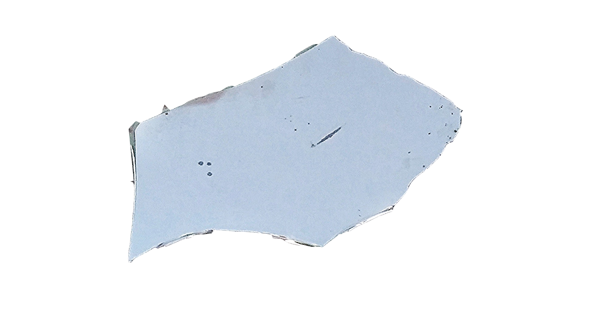
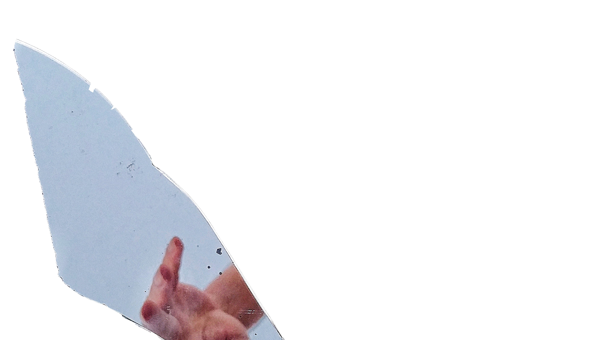
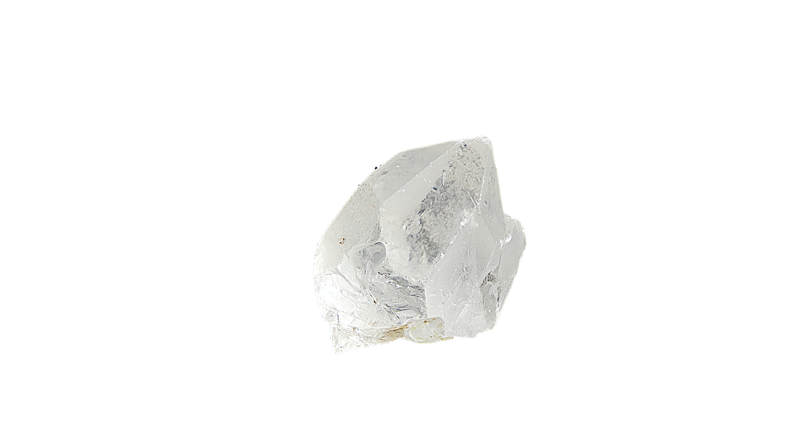
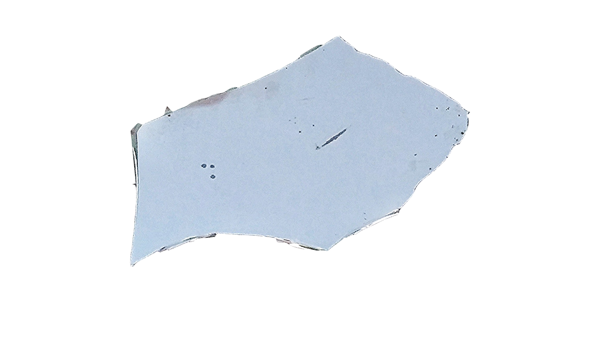
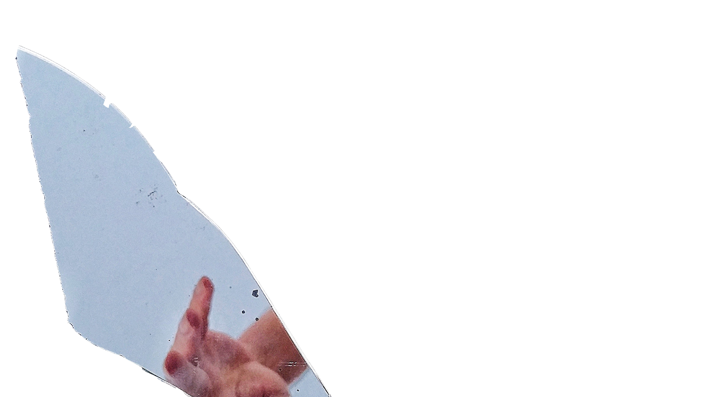
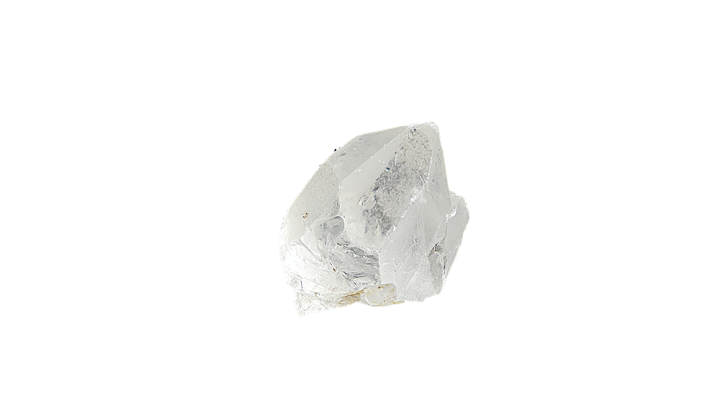
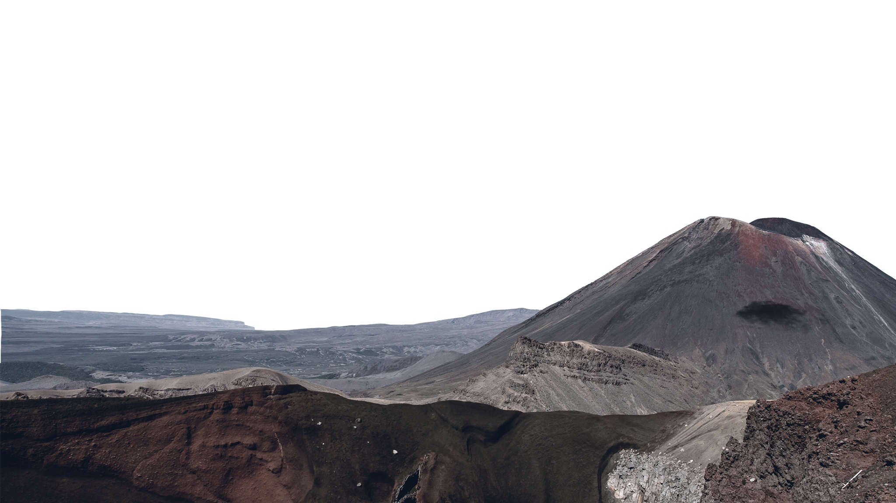
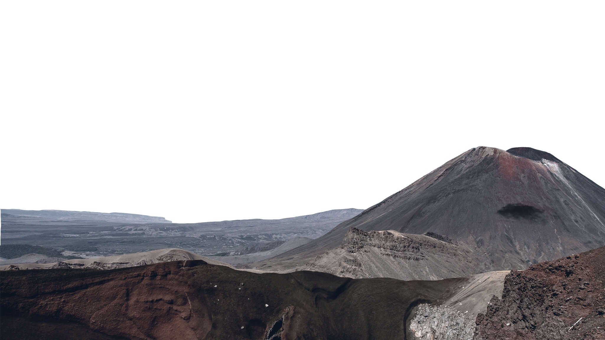

 



talc
ทัลก์หรือแร่หินสบู่ เป็นแร่ที่อ่อนสามารถใช้เล็บขูเป็นลอยได้ ถูกนำไปใช้ในอุตสาหกรรมการก่อสร้าง Learn More

gypsum
ยิปซัมหรือเกลือจืด
สามารถขีดเป็นรอยได้บ้างด้วยเล็บมือ ใช้ในการผลิตปูนซีเมต์ ปูนปลาสเตอร์ ปุ๋ยและเครื่องประดับ
Learn More
Calcium
แคลเซียม
สามารถขีดเป็นรอยได้บ้างด้วยเล็บมือ เป็นองค์ประกอบของกระดูกและฟัน ถูกใช้ในอุตสาหกรรมหลากหลาย
Learn More
selenium
ยิปซัมหรือเกลือจืด
สามารถขีดเป็นรอยได้บ้างด้วยเล็บมือ ใช้ในการผลิตปูนซีเมต์ ปูนปลาสเตอร์ ปุ๋ยและเครื่องประดับ
Learn More

apatite
สามารถทำให้กระจกเป็นรอยได้บ้างเล็กน้อยและกระจกก็ทำให้อะพาไทต์เป็นรอยได้
ถูกใช้ทำปูนซีเมนต์และปูนขาว
Learn More
diamond
เพชรจะไม่ถูกอะไรขีดข่วนได้นอกจากเพชรด้วยกัน
ถูกนำมาทำเป็นเครื่องประดับและใช้ประโยชน์ในอุตสาหกรรมต่างๆ
Learn More